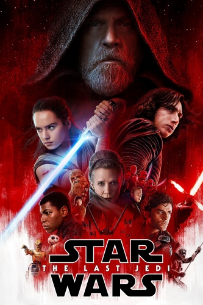

The Last Jedi: The First Episode of the Final Trilogy
Poster Hype
Luke, the greatest character in all of Star Wars, displayed prominently at the top of the poster, made a lot of fans, me included, excited for this movie. Although we will talk about character development in more depth later, this page will mostly be about Luke.
This was one of the most disappointing movies ever. I don't know where to begin with parts that I dislike. New characters in this movie include Rose, Snoke, Luke, and Holdo. Rose, Finn's new love interest, takes him on a random side quest for no reason other than to entertain the movie-watchers with scenes of racing animals and children. Snoke dies easily and in a meaningless way, with motivations unclear and no backstory whatsoever. After he dies, there is what is widely considered the worst duel in all of Star Wars1. A small screenshot is pictured below. A duelist standing behind Kylo Ren waits for him to be done fighting the other guy before starting to engage.
Luke- The Last Jedi?
We find out that Luke, who turns Anakin from the dark side in RotJ with love and the power of family, falls into the same vision trap thing as Anakin and tries to kill Kylo. What a way to ruin a character. Would Luke really have done that? And then hid on a deserted island? The same Luke that left Dagobah to go help his friends, we are supposed to believe, hides from his friends and doesn't help them even though he knows they could be dead. Han dies, Luke doesn't care, doesn't go help, doesn't feel like it's important. Later in the movie, Luke uses all of his energy to create a diversion with a cool force projection, but then he dies right after. Why even make a force projection in the first place??
Then, this Holdo person accelerates her ship to light speed and apparently shoots straight through another ship. Although a stunning visual and a cool scene, completely unrealistic, totally incongruous with the rest of the movies and how lightspeed works.